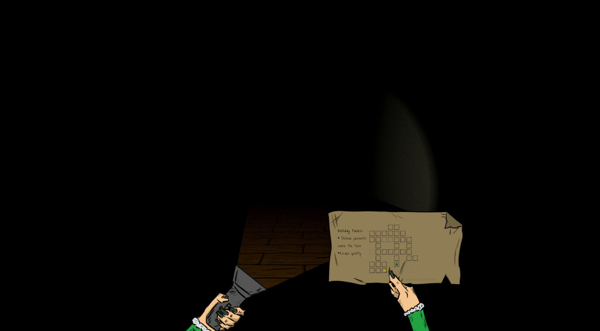
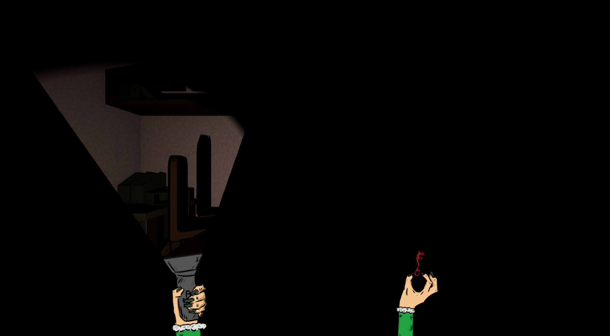

My last game of 2025 was a humble dungeon crawler in a horror and dark setting.
Lights out was a game made specifically for Jame Gam Christmas Edition. The main theme other than the obvious christmas setting was "Light". There was also a special object that contributed to additional points in the final rating, this time it was a bell. In the development process I had forgotten about that and my game launched without any trace of a bell.
I made the map layout and its texture in Blender. All other sprites I made using Krita and my good old drawing tablet.
I had a lot of fun with it and with the quality of the sprites I've drawn.
The game is a dungeon crawler, like I mentioned before. The player can turn left or right and move forwards. His main objective is to quietly put the presents under the christmas tree and escape the house. There are a lot of rooms and the player must find matching keys to open the doors blocking the rooms.
I came up with a cool (I think) mechanic that makes the player use the flashlight in a special way. At all times the player can see elf's hands. The left one is always holding the flashlight and the right one serves a few purposes. The flashlight sends out a stream of light through which the player can see the environment. Everything else is blacked out. The light stream is a flat 2D plane that moves left and right, its position anchored on the hand. The player uses the keyboard to move the elf and mouse to move the hand with the flashlight and pick up keys or open doors. Right hand serves three purposes: it displays a map, it holds the picked up key and it can flick the flashlight if it runs out of battery. All three are essential and would be used at some point in the game. The player needs a map to navigate, hold the key to open the door and flick the flashlight to see the keys he needs to pick up.
The game jam lasted a week and ended on the 24th December 2025. I've worked on it throughout the whole week. I've always wanted to make a dungeon crawler game, as well as a game in a horror/ dark setting. I've gained a lot of experience not only in making a dungeon crawler, but also (and I think primarily) in drawing in Krita. I learned a great deal while making MTX Sim, but here I really really liked what came out of it. The slightly creepy elvish hands with long rotten nails boosted the dark experience and gave it a bit more personality.
Lights out has taken 57th place out of 90 submitted games.

